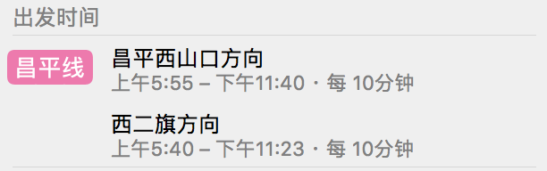
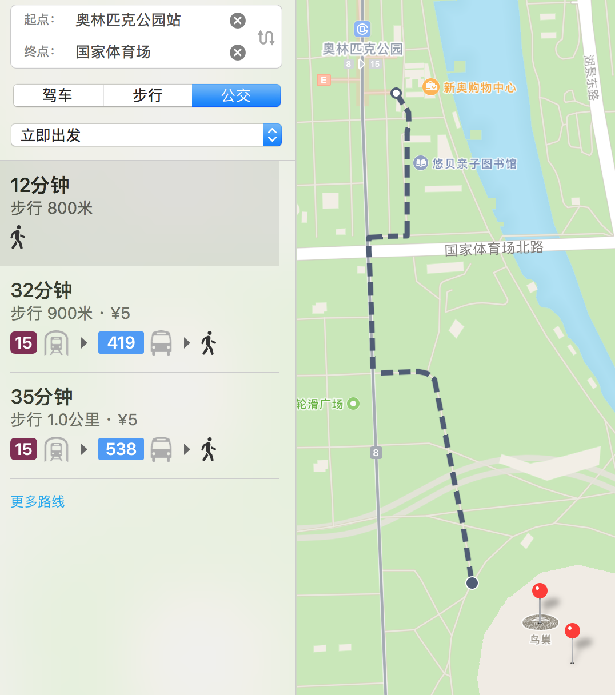
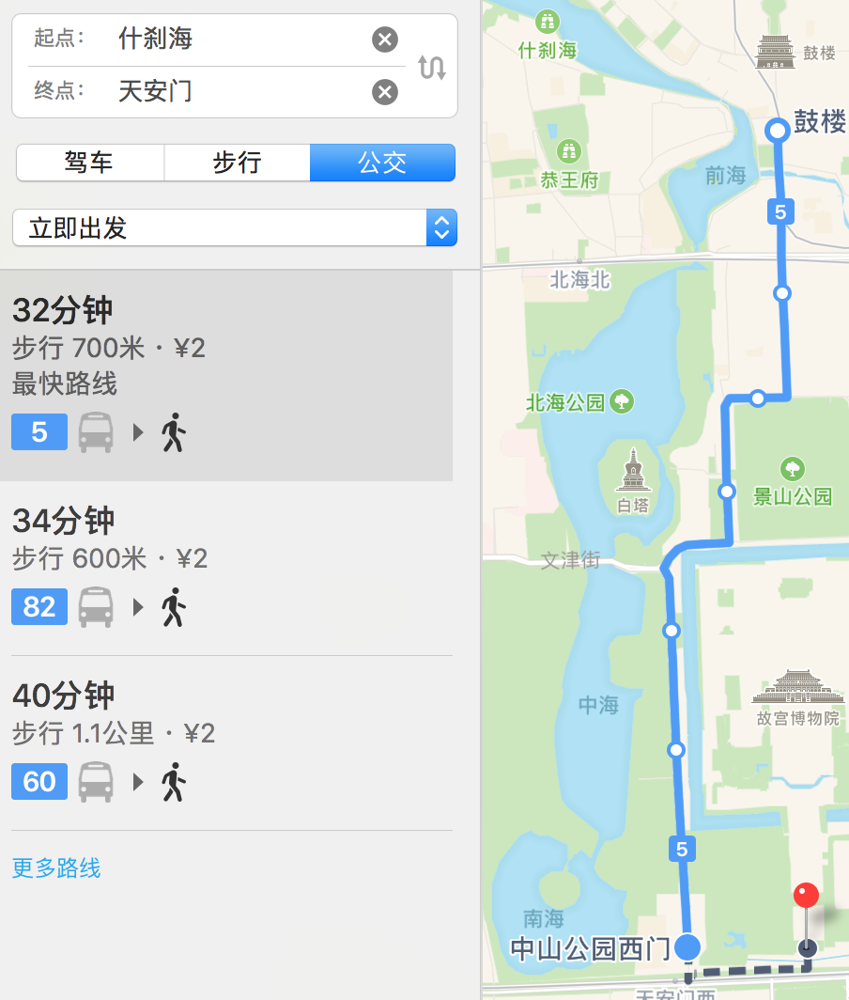
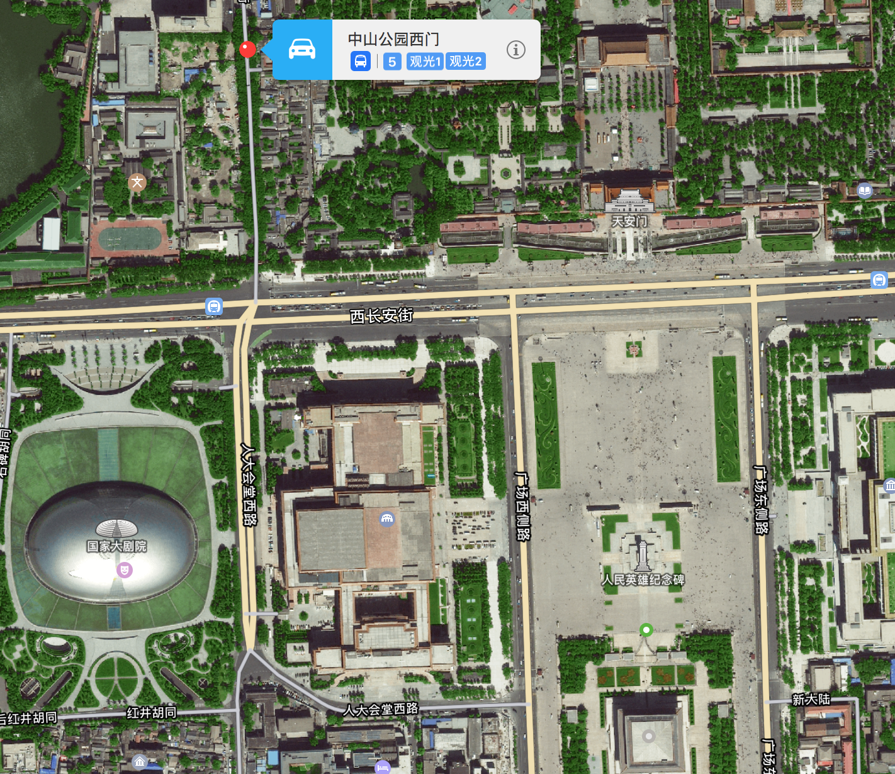
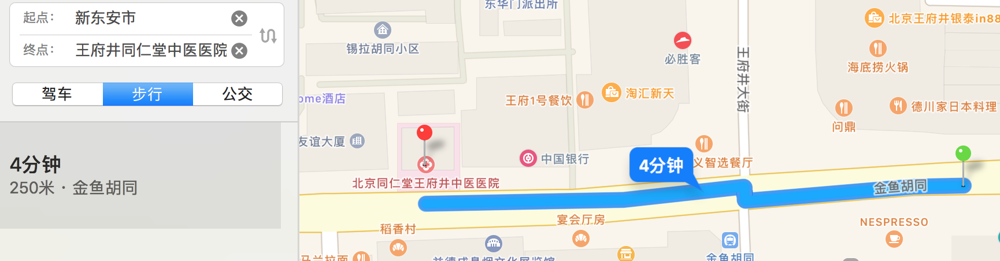
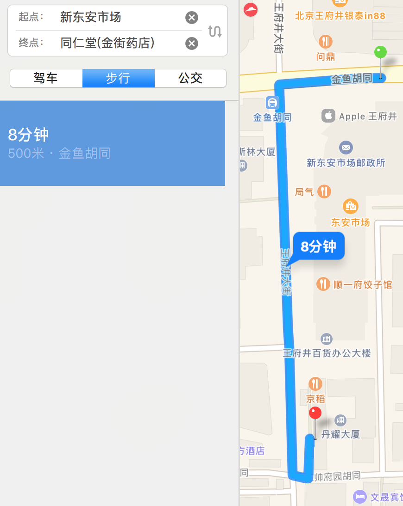
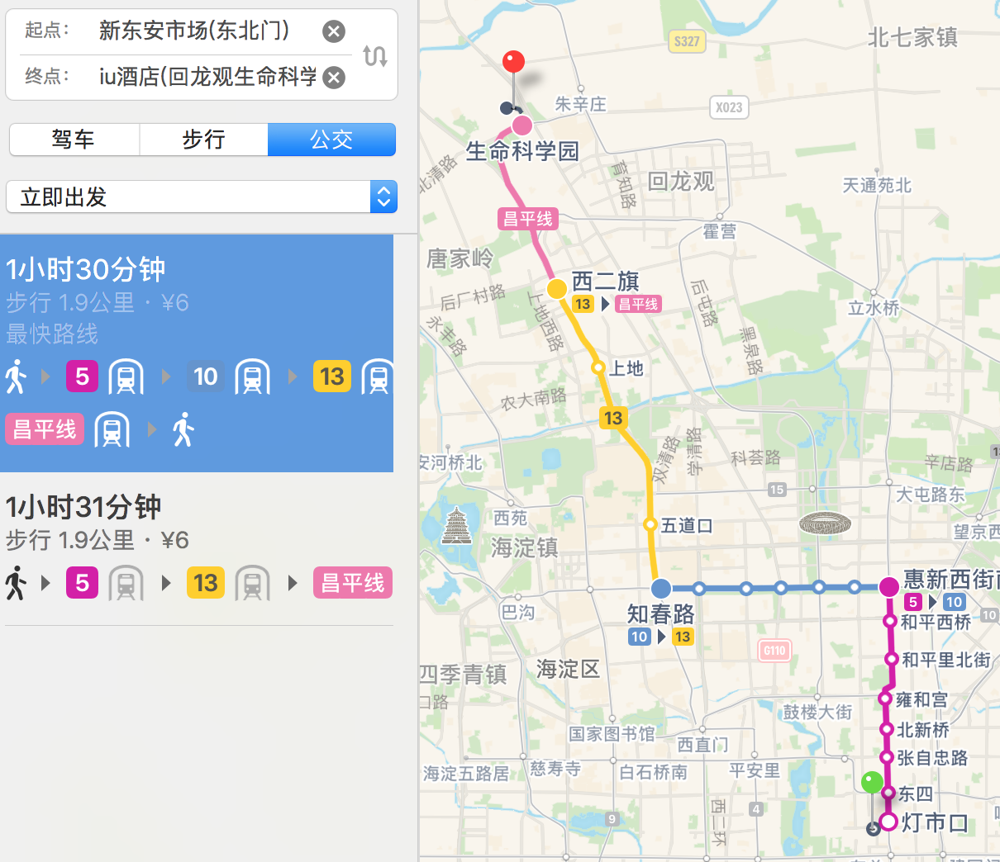

行程计划安排
8月27日
上午12：00
- 乘坐国航CA1352 12:30-15:40
- 16:00 - 17:00 乘车前往酒店，办理入住
- 酒店名称：iu酒店(回龙观生命科学园地铁站店)
- 中国北京市昌平区回龙观镇北清路1号院珠江摩尔国际大厦3号楼
- 联系电话：010-80703588
- 17：00 - 晚上在永旺超市（酒店附近，约1km）进行晚餐，后步行回酒店
- 休息
8月28日
7：00 a.m. 出发（暂定，可以6：30 a.m.）
附：昌平线地铁开放时间表


- 什刹海站 - 钟鼓楼、什刹海公园、地安门、恭王府（如果能走的话）
- 打卡：北冰洋汽水（有历史意义）
- 打卡：烟袋斜街：古玩、小吃一应俱全，类似重庆的磁器口
- 打卡：虎坊桥津三绝炸糕(地安门店) -- 据说很好吃的样子，也是北京特色小吃
- 什刹海 -- 中山公园西门 （乘坐公交车兼观光旅行）
- 初定5号 公交路线
- 车行方向左侧为故宫（沿护城河），右侧为北海公园、中南海，下车地点在天安门正门左侧

- 中山公园西门 -- 天安门广场 步行、观光1、2线（价格较贵，15/人，刷卡可以便宜一点，10元/人）
- 感兴趣-->多停留一阵
- 不感兴趣-->坐观光2线前往王府井大街（新东安大街市场）（沿途也观光）
即便走到天安门广场了亦可以乘坐观光2线，在天安门广场附近均有设置停靠站
附：中山公园西门周围地表建筑鸟瞰

附：观光2线路线：前门→天安门广场东→天安门西→中山公园西门→故宫西门→北海→故宫→北池子北口→故宫东门→东安门大街西口→新东安市场→王府井路口北→天安门东→天安门广场西→前门（15站)
- 新东安市场 -- 王府井街、同仁堂药店、同仁堂中医医院


- 返回酒店 -- 地铁
- 地铁结束服务时间23：35
- 推荐5号线转13号线，减少换乘

8月29日
通知内容
8月29日 8:00-12:00 新生报道 13:00-16:30 家长见面会、航空公司见面会
8月29日 至 8月31日 军训准备
8月31日上午 北航新生开学典礼
9月1日 至 9月14日 军训
预定计划
七点起床；七点半去吃早餐、8点退房出发
搭乘出租车前往沙航（大概40元）
具体事项等待28号通知